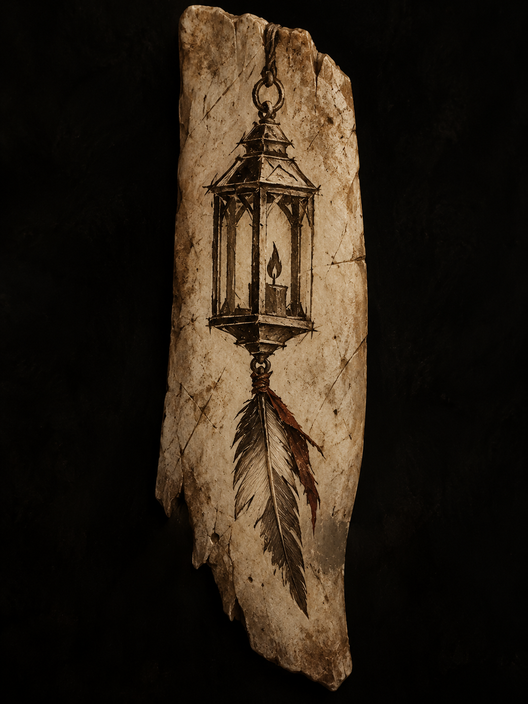
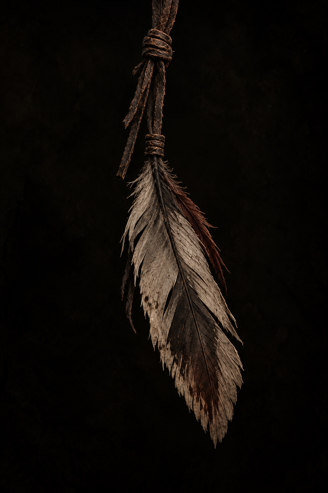

The Wayward Mark
Wayward
Find your way.
Not every road is walked alone. Wayward is a company of Horde players built around the people beside you.
Enter Wayward →
Not every road is walked alone. Wayward is a company of Horde players built around the people beside you.
Enter Wayward →Wayward is built for players who want something more personal than another name above their character and something less rigid than a guild that tells them how they have to play.
We dungeon. We explore. We gather, craft, fight, trade, roleplay and help one another get where we're going. Different people will find different reasons to stay. The company is what connects them.
You don't have to arrive with a story already written. You don't have to fit someone else's mold. What matters is showing up, contributing and becoming someone the people beside you can count on.
Everyone carries something.
What we carry, we carry together.Wayward isn't built around titles. Authority stays simple, responsibility stays visible, and most of us stand together as the Company.
One voice at the head of the Company. The Waylord sets its direction, represents Wayward and carries final responsibility for where the road leads.
A small circle trusted to act for the Waylord and look after the Company. Hands help lead events, welcome new members, manage shared resources and keep Wayward moving.
The body of Wayward. Full members who have made their place among us and can be counted on to contribute, participate and stand beside the people carrying the same mark.
New arrivals traveling with Wayward. A Wayfarer isn't beneath the Company; they're finding their place within it. Show up, take part and the distinction doesn't last long.
You arrive a Wayfarer. You become Company by becoming someone the Company would notice missing.

The lantern is Wayward's mark: something carried into the dark, not a promise that the road ahead will be easy.
Beneath it hangs a worn feather. Weathered. Imperfect. Still moving. No two roads leave the same marks on the people who walk them.
When a Wayfarer becomes Company, a Ruffled Feather is given to them. It is ordinary by design. Its worth comes from the people who understand what it means.
You don't carry the mark because you joined. You carry it because you stayed.
Given by a Hand. Carried by the Company.